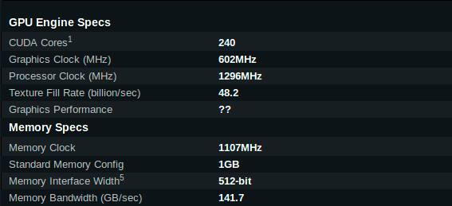

Placa Gráfica GeForce GTX 280
Principais caracterísicas
♦ 2nd Generation NVIDIA Unified Architecture"Arquitetura de segunda geração que fornece uma melhoria na performance até 50% em relação à primeira geração através de 192 núcleos de processamento aprimorados que proporcionam incrível potência de sombreamento."
♦ NVIDIA PhysX™ -Ready1"Suporte GeForce GPU para a tecnologia NVIDIA PhysX, permitindo uma interação totalmente nova de jogos físicos para uma experiência mais dinâmica e realista com a GeForce."
♦ NVIDIA CUDA™ Technology3"A tecnologia CUDA destrava o poder dos núcleos de processamento da GPU para acelerar as tarefas do sistema mais exigentes (como a codificação de vídeo) oferecendo até 7x mais em desempenho em relação às CPUs tradicionais."
